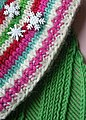
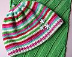

|
||
Premium Patterns Wintry Mix Mitts Love Bytes HawkeyeFree Patterns Kiddie Cadet Summerlin Ruffled Scarf Seamless DS Sock Simply Seamless Pouch Myriads of MushroomsExtras DIY Mitten Blocker Felt Patch Tutorial Yarn Dyeing Tutorial Needle Pouches Knitting Journal |
November 30, 2007 - Posted by Alice SchneblyFOs Old and NewProject Specs Pattern: Clapotis a pattern by Kate Gilbert for Knitty Well, I decided to take a little break from knitting mittens (not for long though, because have you guys seen these?) and knit up a little something for Camdyn. I was inspired by all the colors of ornaments and wrapping and Christmas decorations that have been in the stores this year. I love the combination of pink, green, red, light blue, and white that I’ve seen everywhere. They seem to be the new colors of Christmas! After playing around a bit on the Random Stripe Generator I came up with a fun order for the stripes and went to work. I love how the hat turned out, and it looks totally adorable on Camdyn, if I do say so myself ;). The little nubbin on top is darling. My favorite part beside the color combo has to be the snowflake buttons. I picked these up at JoAnn during their after Thanksgiving sale, because I knew I would be able to use them somehow. I think they look perfect on this hat! As you can see, the hat isn’t the only FO here. Camdyn is also wearing a Clapotis that I knit her quite a long time ago, while we were on vacation in Boston. I knit is so fast and was so busy at the time I never got a chance to block it or post about it. I came across it the other day when looking through my basket of knitted things. I don’t even remember how many repeats I did of each section, but it ended up the perfect size for Camdyn to wear it as both a scarf and a shawl. I think she likes it a lot (though I’m not quite sure she likes it as much as my clapotis) and she happily obliged to wear it around today while she played outside in the rain. I love this outfit so much I think I may have Camdyn wear it for her annual Christmas pictures. Yes, we are really in the mood for x-mas here and we’ve already put up lots of lights and decorations. I’m especially looking forward to this year because it is the first time my sisters and my parents and our families will all be together for quite some time. This time of year is especially exciting because we also have Cam’s birthday and Kenny and my wedding anniversary coming up soon too. I love it, but I feel like I have so much to do and so little time… I guess I better get to work! |
   Recent ReviewsRecent Posts
 Our Favorites
|
| © 2007 KathrynIvy.com | ||
{kind=link}
{kind=link}
{kind=link}
{kind=link}